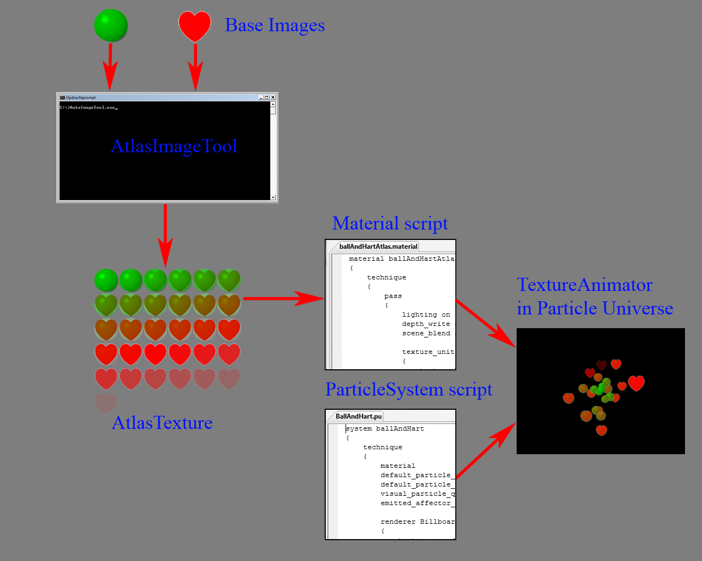

Texture Animator
The Texture Animator animates the texture of a particle. This makes it possible to animate each particle individually. A precondition is, that texture coordinates must be defined in the Particle Render, because the Texture Animator assumes you are using an atlas texture that contains all images needed for the animation. See the Particle Render page how to define texture coordinates.
The Texture Animator currently only works in combination with a Billboard Renderer and the Texture Rotator doesn't mix very well with the Texture Animator.
Definition
Syntax:
affector TextureAnimator [affectorName] {affector properties}
See ParticleAffector for explanation of the syntax.
Example:
affector TextureAnimator
{
time_step 0.1
start_texture_coords_range 0
end_texture_coords_range 17
texture_animation_type loop
texture_start_random true
}
Visualisation
The figure below illustrates the workflow of creating an atlas image with the AtlasImageTool and using it in the TextureAnimator.

Properties
Time Step Animation
An animation can be based on a fixed update time or based on the lifetime of each individual particle (= default). The latter means that if a 'loop' animation is defined, the update interval of each animation frame is calculated by means of 'lifetime of particle / number of animation frames'. The number of animation frames can be set by 'texture_coords_start' and 'texture_coords_ends'.
This also means the the animation sequence is only played once during the lifetime of a particle.
If the 'time_step_animation' is set, the each animation frame is updated every 'time_step_animation' seconds. This applies to all particles. Setting this value means that an animation sequence can be played multiple times per particle. Syntax:
time_step #value
time_step is the keyword. time_step_animation is deprecated from version 1.2
#value is value > 0 that defines the update interval of each animation frame. Default: 0.0 (not set).
Animation Type
Multiple types of animations are supported. Syntax:
texture_animation_type loop | up_down | random
texture_animation_type is the keyword.
loop means an animation that plays the animation frames in a sequence from start..end and is repeated if 'time_step_animation' has been set. This is the default value.
up_down means an animation that plays the animation frames in a sequence from start..end and down to start again.
random means an animation where the animation frames are played random.
Start Texture Coordinates Range
This property defines the first texture coordinate set, where each texture coordinate set defines one animation frame. Syntax:
start_texture_coords_range #value
start_texture_coords_range is the keyword. texture_coords_start is deprecated from version 1.2
#value is value > 0 that defines the first texture coordinate set. Default: 0.0.
End Texture Coordinates Range
This property defines the last texture coordinate set, where each texture coordinate set defines one animation frame. Syntax:
end_texture_coords_range #value
end_texture_coords_range is the keyword. texture_coords_end is deprecated from version 1.2
#value is value > 0 that defines the last texture coordinate set. Default: 0.0.
Random Start
If set to true, the animation starts with an animation frame between 'texture_coords_start' and 'texture_coords_end'. If set to false, the starting animation frame is 'texture_coords_start'. Syntax:
texture_start_random true | false
texture_start_random is the keyword.
true | false is boolean value that defines whether the animation start with the value determine by 'texture_coords_start' or a random value between 'texture_coords_start' and 'texture_coords_end'. Default: false